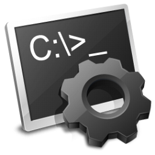

BATCH

INTRODUCCION
Para aprender BATCH no requieres de nada más que gusto por este sencillo lenguaje de programación, primero iniciaremos con la conceptualización básica para que entiendas cómo funciona este lenguaje, como ejecutarle y demás cosas que ofrece.
Herramientas
Para este aprendizaje no te recomiendo nada en especial pues me parece que la mejor forma de aprender este lenguaje es con el blog de notas, pero si prefieres usar algún editor de texto como visual estudio code u otros no habrá ningún problema, aunque para ejecutar estos scripts deberás contar con un pc o portátil con Windows ya que en Linux o Mac no se ejecutará.
Batch
Para entender este concepto piense en un archivo bat como un script (una serie de pasos que tiene que cumplir el ordenador o en este caso la terminal), sabiendo esto, serás tu quien controle o dirija y maneje el flujo de procesos(el flujo de los pasos), para que el terminal cumpla debidamente con estos pasos es importante saber la sintaxis del lenguaje (piensa en la sintaxis del lenguaje como un idioma y sus respectivas reglas), si esta sintaxis está mal escrita el script no se ejecutara o tu cadena de pasos se romperá(si un paso está mal escrito no continuara con el siguiente paso generando error). El lenguaje Batch imagínalo como una cadena de pasos, cada uno de estos debe tener relación o uso con el anterior o siguiente, sabiendo esto ya puedes iniciar la primera parte de la sintaxis Batch.
¡VAMOS!
Variable
La variable es un valor indefinido y cambiante si así lo declara uno, puedes pensar en la variable como una caja, en ella tú decides si van a ir naranjas, limones, etc... entonces en esta caja si decides que vallan limones no podrás meter naranjas y así consecutivamente, estas variables en vez de naranjas o limones llevaran números y valores operables por otras variables o incluso otros valores(ya definidos como números naturales), en Batch, podrás jugar de muchas formas con ellos, sabiendo esto ya puedes ir a la segunda parte de variabilidad.
¡VAMOS!
Condiciones
Las condicionales son eso, condiciones que le das al flujo de procesos, para que cuando se cumpla con una condicional haga el proceso A o si no el proceso B, con estos puedes hacer contraseñas, bucles y demás, sabiendo esto ya puedes avanzar con la parte de condicionalidad.
¡VAMOS!